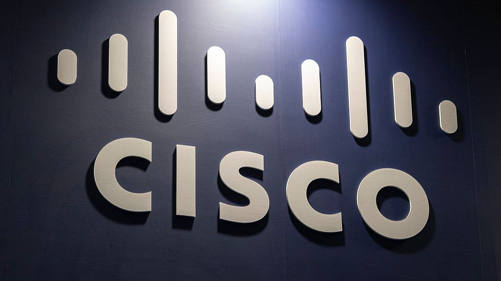

Президент и продуктовый директор Cisco Джиту Патель в интервью Fortune рассказал о ставке, на которую немногие компании решились бы: 27-летнему инженеру Паднабхану «Пэдди» Кришнамурти выдали безлимитные токены ИИ-моделей и поручили переработать легаси-код компании. «Я дал ему неограниченные токены, потому что он… — я сказал ему: давай, твори», — описал Патель постановку задачи. Компания Cisco стоит около 429 миллиардов долларов, и именно ей теперь предстоит посмотреть, что из этого выйдет.
Цель заявлена дерзкая: переписать 98% легаси-кода за 24 месяца — и всего за четыре недели Пэдди должен доказать жизнеспособность подхода (по данным Heise, до конца 2027 года планируется обновить 70% продуктов линейки). Работать над этим будет команда буквально из двух человек — сам Кришнамурти и ИИ-инструменты. Пэдди пришёл в Cisco в 2025 году вместе с приобретением стартапа EzDubs, который занимался переводом речи в реальном времени; до этого он был основателем и руководителем собственной компании. Патель называет его «энерджайзером» и принципиально ставит задачу в пять уровней ниже себя — чтобы идеи не вязли в корпоративной иерархии.
Легаси-код — главная боль крупной софтверной индустрии: переписывать его руками дорого и годами, а ИИ-агенты впервые делают такой «капитальный ремонт» экономически мыслимым. Если эксперимент удастся, безлимитные токены для пары одарённых инженеров окажутся дешевле сотен подрядчиков; если провалится — получим дорогой урок о том, что на агентский рефакторинг ядерных систем пока рано. Отдельного официального анонса Cisco не публиковала: история вышла из интервью Пателя изданию Fortune, все цифры — оттуда и из пересказов.
Критики (например, explainx.ai) уже заметили: у громкой истории пока тонкая доказательная база — четыре недели «доказательства концепции» на фоне двухлетнего плана. Так что за развитием сюжета стоит следить: это редкий случай, когда весь рынок разработчиков учится на чужом смелом эксперименте в реальном времени.